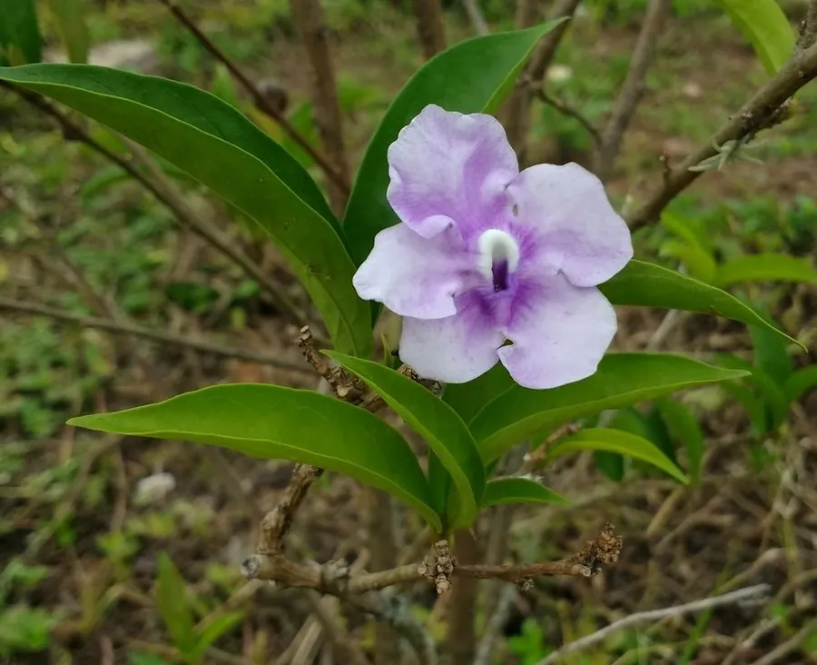

灌木与花木 · 植物界
鸳鸯茉莉 Brunfelsia pauciflora

茄科鸳鸯茉莉属常绿灌木，花初开蓝紫、后渐变为白色，同株上紫白相间，芳香浓郁，故名“鸳鸯茉莉”。
- 分类
- 门被子植物门纲木兰纲目茄目科茄科属鸳鸯茉莉属
- 栖息环境
- 热带疏林与林缘，喜温暖湿润、阳光充足，不耐寒
- 地理分布
- 原产巴西；中国华南、西南及世界热带地区广泛栽培
- 保护级别
- IUCN 暂无评估；栽培普遍，野生种群未受明显威胁
物种志
鸳鸯茉莉为常绿灌木，高 1–2 米，分枝密集，茎皮灰褐色。叶片椭圆形至倒卵形，长 5–10 厘米，革质，上面深绿色。花单生或数朵聚生叶腋，花冠高脚碟状，初开时蓝紫色，随后逐渐褪为淡紫、白色，同一株上可见紫、白两色花并存，直径约 4–5 厘米，芳香浓郁；果实为浆果状，成熟时橙黄色。
本种原产巴西热带地区，喜温暖湿润、阳光充足的环境，在中国华南、西南常作盆栽或庭园花木。它花期长、香气浓，因花色由紫变白、宛如“昨日、今日、明日”而得名英文 Yesterday-today-tomorrow。全株含布鲁氏碱等生物碱，误食叶片或果实可引起流涎、呕吐、震颤等中毒症状，对猫狗尤其危险，观赏时应避免儿童与宠物啃食。
形态与习性
- 株高1–2 米，分枝密集
- 花期4–10 月，花色由紫转白
- 果期秋季，浆果状、橙黄色
- 光照喜光，夏季适当遮阴
- 水分喜湿润，生长期保持土壤微湿
- 土壤疏松肥沃的微酸性壤土
- 毒性全株含生物碱，误食可致中毒
趣味知识
- 鸳鸯茉莉的花初开蓝紫，两三天后褪成白色，因此一棵树上常同时挂着紫花与白花。
- 它的英文名 Yesterday-today-tomorrow 正是形容花色逐日变化的现象。
- 花香在傍晚最浓，常被种在窗前或庭院入口处。
- 它属于茄科，与番茄、辣椒是远亲，全株含生物碱，不可食用。